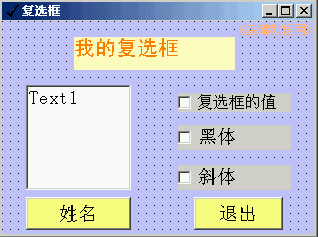
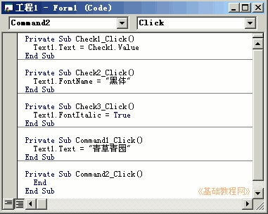
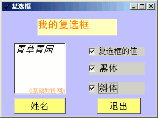

VB程序设计基础
作者：TeliuTe 来源：基础教程网
复选框是一个小方框，可以打勾选中或取消，下面我们来看一个练习；
1、启动VB
1）双击桌面上的图标，或者点开始菜单，运行VB；
2）在出来的新建窗口中，点“打开”按钮，新建一个标准EXE工程，然后进入主窗口，以 Checkbox 为文件名保存文件到自己的文件夹；
3）在属性窗口中设置背景，把标题改为“复选框”，设定Icon图标选项；
2、使用复选框
1）在窗体中添加一个标签、一个文本框、三个复选框、两个按钮，排列整齐；
修改标题：标签改成“我的文本框”，复选框分别改成“复选框的值、黑体、斜体”、按钮分别改成“姓名、退出”；

2）文本框用来显示字体效果，也可以自己输入，保存一下，运行程序看看效果；
3、输入代码
1）进入代码窗口，先在列表选择Command，输入按钮的代码如下：
Private Sub Command1_Click()
Text1.Text = "青草青园"
End Sub
Private Sub Command2_Click()
End
End Sub
2）接着选择第一个 Check1 复选框，输入下面代码，把复选框的值给文本框，打勾时为1，取消时为0；
Private Sub Check1_Click()
Text1.Text = Check1.Value
End Sub
3）接着分别选中另外两个复选框，输入下面的代码：
Private Sub Check2_Click()
Text1.FontName = "黑体"
End Sub
Private Sub Check3_Click()
Text1.FontItalic = True
End Sub

4）保存一下，运行程序，分别点击各个复选框，看一下效果；

复选框范例(在弹出的对话框中点“运行、运行”)
本节学习了使用复选框的基本方法，如果你成功地完成了练习，请继续学习下一课内容；
本教程由86团学校TeliuTe制作|著作权所有
基础教程网：http://teliute.org/
美丽的校园……
转载和引用本站内容，请保留版权信息和本站链接。